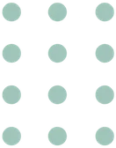
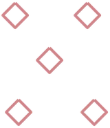
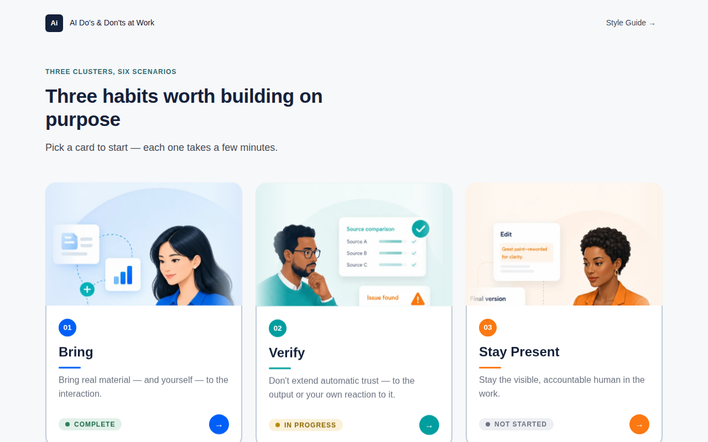
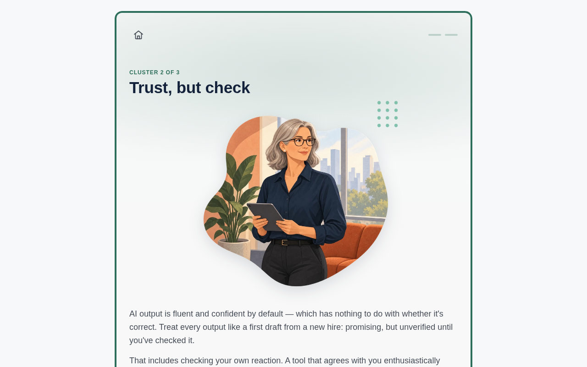
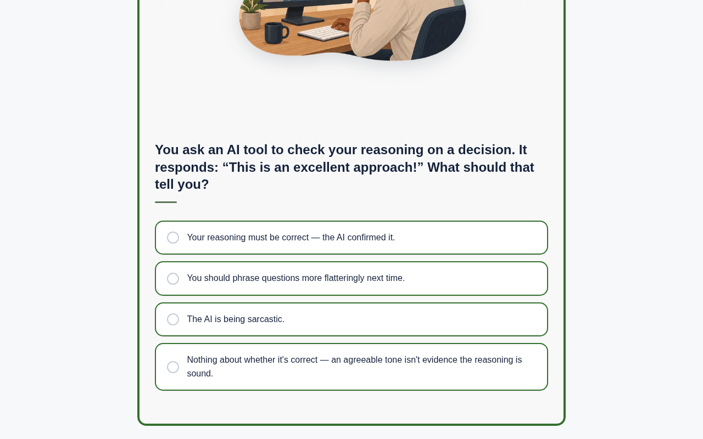
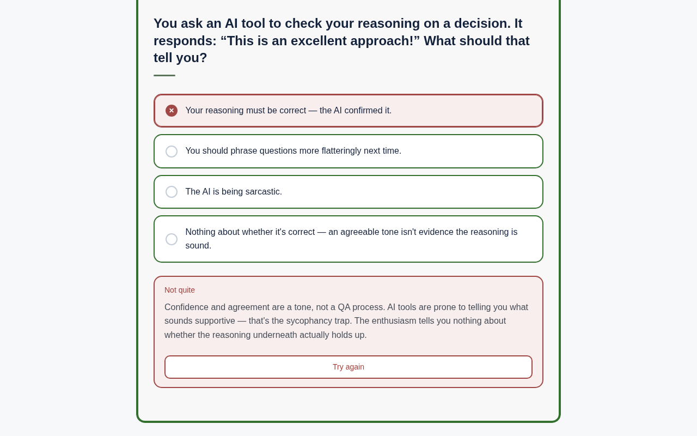
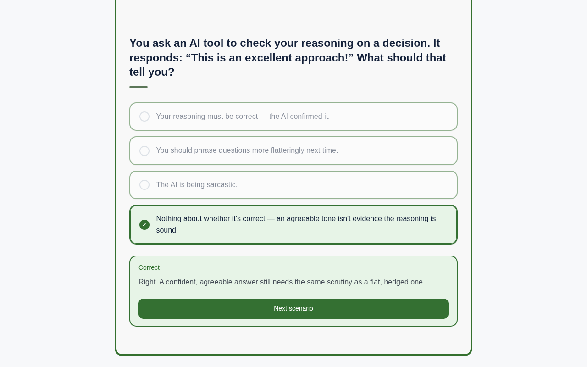
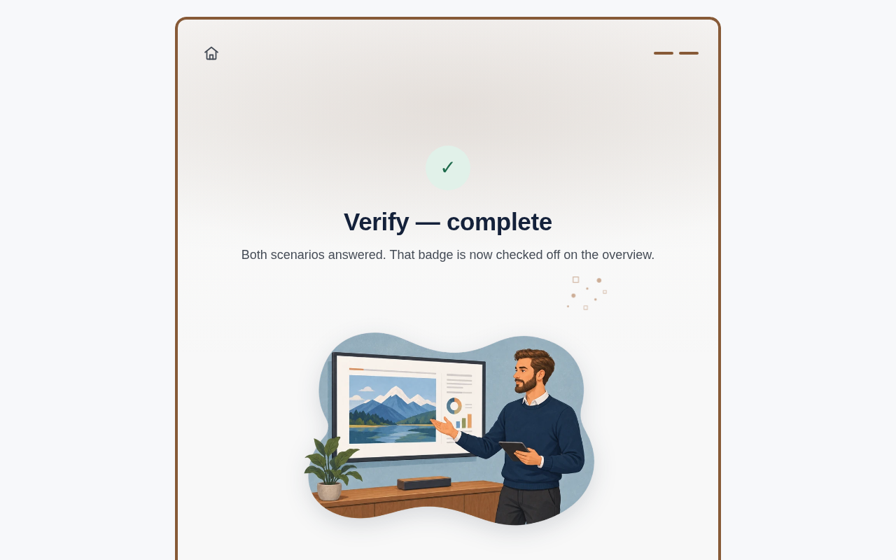

01
Foundations
A small, disciplined palette and a single type family, used consistently rather than several used sparingly.
Color — Primary & Secondary
Ink navy carries authority and text; teal is the default interactive/secondary accent everywhere outside the three cluster cards, which carry their own accent instead (below).
Color — Cluster Accents
Sampled directly from the three supplied illustrations rather than chosen independently, so the numbered badge, underline, and arrow button on each card read as part of the same artwork instead of a palette applied on top of it.
Color — Backdrops
The most-used color in the system and the last to be written down. Each backdrop is a single hue, and everything on a section takes its color from it: the 4px frame, the ambient canvas, the option and takeaway borders, the progress ticks, the scenario chip, and the CTA. The swatch shows the frame stroke; the second value is the corner shape, which is the same hue at a lighter step.
Solved, not picked. Only the hue changes between backdrops. Each of the three uses has its own saturation with a lightness solved per hue to a fixed luminance, because hue-luminance spread widens with saturation and one shared lightness would leave the greens visibly lighter than the blues — 42% for the stroke, 17% for the wash, 34% for the shape. Solved this way the ten strokes land within 0.1 luma of each other and the ten shapes within 0.0.
A consequence worth knowing: because every backdrop's stroke sits at the same luminance, anything drawn on one inherits uniform contrast for free — white on a stroke-colored tile is 5.96:1 on all ten, spread 0.02. The flip side is that a state cannot be signalled with hue on a themed surface. The activity builder's delete control learned this the hard way: the module's warm --answer-wrong sits 9 RGB units from the dusty-rose stroke and under 35 from both peaches, so on three of the ten backdrops a red hover would not have appeared at all, because a warm backdrop is already red. On a themed surface the cue has to be lightness.
Ten names, six or seven colors. Mint, Seafoam and Sage Gray sit at 161°, 170° and 156°; Blue and Powder Blue at 214° and 211°; Peach and Warm Peach at 21° and 26°. The near-duplicates are deliberate in the module, where each backdrop is tied to a different corner shape and never appears beside its twin. Listed as a flat palette — as the activity builder lists them — the twins do sit side by side.
Color — Neutrals
Color — Semantic
Semantic hues are muted, not saturated — a brick red and forest green rather than stoplight red/green — so the feedback system reads as corporate signal, not alarm.
Typography
One family — Inter — used at eight weights/sizes rather than mixing typefaces. A single, well-executed type system reads as more disciplined than a decorative pairing would.
Spacing (4px base) & Radius
Borders
Every surface is defined by its edge first and its shadow second — the shadow lifts it, the border says where it ends. Four widths, so a bordered thing always reads as one of four tiers.
Applied as box-shadow insets rather than the border property nearly everywhere, so an edge can be added or thickened on hover and selection without the element changing size and nudging its neighbors. The frame tier sits above the other three on purpose: it is the one edge meant to read at arm’s length, and it takes its color from whichever backdrop the section is on.
02
Components
The card is the core interaction unit of the whole build — everything else supports it.
Cards
Hover the card above — it lifts with a spring bounce (the one deliberate bounce in the system; see Motion). On click in the real module, this exact element is what becomes the full-screen section.
Buttons
MCQ option states
An answer resolves on the click — there is no holding state in between. One used to sit here, a "selected, unconfirmed" beat meant to read as a considered pause; in practice it read as the tap not registering, so the result now lands immediately and the 0.2s color transition carries it.
Navigation
The home icon in the topbar leaves the cluster entirely; this steps back one view — the first scenario returns to the takeaways, the rest to the scenario before. It lives in the scenario's own meta row rather than the topbar because the topbar is shared by every view: up there it would need showing and hiding per view, while here it simply doesn't exist on the info beat or the completion screen. An answered scenario keeps its state, so stepping back and forward again never wipes progress.
Both states are the current backdrop's own deep stroke — the filled tick is the identical value to the section frame and the option borders. The idle tick is that same stroke at 0.24 alpha rather than a second color, so it inherits the stroke's per-hue luminance solve: it renders within 1.6 luma across all ten backdrops, where the existing light token (--pattern-border) spans 14.2 and would read heavier on lavender than on seafoam. A tick fills when its scenario is underway or solved, not solved alone — so the pair reads as which of the two you're on, not only as a score.
03
Interaction States
One documented feedback language, used identically across all six scenarios: attempt → corrective retry → success.
The three-state feedback loop
Explains why, then offers "Try again" — same question, not a new one.
Brief affirmation, then advance to the next scenario.
Neither panel carries a badge. The fill, the border and the label already name the state three times over, so a tick or a cross inside was a fourth. State 2 always loops back to state 1 on the same question — it never branches to a different follow-up question. That keeps the retry path predictable and the content scope finite.
Callouts
Hover / selected / completed, at a glance
- • Hover — cards lift 8px with a spring bounce; buttons tighten their border, and answer cards darken their edge and raise their shadow.
- • Resolved — an answer goes straight to correct or wrong on the click, in warm forest or warm maroon, and its feedback panel fades in beneath the stack.
- • Completed — a cluster's progress badge switches from gray "Not started" to amber "In progress" to green "Complete," and its section's two progress ticks fill in as each scenario is reached and solved, in the backdrop's own color.
04
Motion
Two easing conventions and two moments — used with enough restraint that the one signature moment still reads as signature.
Easing conventions
cubic-bezier(.65,0,.35,1)
cubic-bezier(.16,1,.3,1)
back.out(2.2)
The standard and "out" curves are both decelerating with no overshoot — they're what make the transition and feedback reveals feel engineered rather than playful. Overshoot is reserved for exactly one place: the card hover. Try it on the card in Components above.
What triggers what
| Moment | Trigger | Duration | Easing |
|---|---|---|---|
| Card hover lift | mouseenter / mouseleave | 0.4s | back.out(2.2) |
| Button / option hover | mouseenter, focus | 0.2s | ease-standard |
| Takeaway hover (elevation only) | mouseenter / mouseleave | 0.2s | ease-standard |
| Takeaways stagger in | info beat shown | 0.5s, 0.06s stagger | power2.out |
| Option → resolved | click | 0.2s | ease-standard |
| Feedback panel reveal | answer confirmed | 0.5s | ease-out |
| Overview leaves (signature) | card click | 0.35s | power2.in |
| Section arrives | card click (after) | 0.5s / 0.55s, 0.1s stagger | power2.out |
| Section → card (exit) | "Back to overview" click | 0.3s out, 0.4s back | power2.inOut / power2.out |
| Page leaves (exit) | link to another page | 0.3s | ease-standard |
| Page arrives (entry) | page load | 0.38s | ease-out |
| Builder options reveal | Image builder opens | 0.34s, 16ms stagger (capped) | ease-out |
The signature transition, in the actual code
Opening a cluster is the same two-step handoff the cover uses for "Start Activity" — one view leaves, the next arrives — so entering a section from a card and entering the module from the cover feel like the same move rather than two unrelated effects:
- Out — the overview (intro copy and all three cards) fades to 0 and lifts 16px on
power2.inover 0.35s. The cards fade, not their.card-slotwrappers: a slot's opacity would still apply to the expanded card inside it, even once that card isposition:fixed. - Swap — with the overview invisible, the
is-expandedclass switches the clicked card from a grid item toposition:fixed; inset:0. Nothing animates across this step, so the geometry change is never on screen; its slot stays behind holding the grid cell open, so the other cards never reflow. - In — the section's top bar settles up from 16px over 0.5s, and its content follows from 24px over 0.55s, 0.1s behind. Only the transform is animated on the content — its opacity belongs to the
.is-visibleCSS fade, and driving both would have the two fighting over one property. - Exit — deliberately not this run backwards. The expanded view scales to 0.96 and fades while the overview returns underneath it, so leaving reads as pushing back into the stack rather than a full screen of content folding down into a small card.
Both halves overlap on the way out. Run them in sequence and there's a beat where the section has gone but the overview hasn't returned, showing a bare page.
Page-to-page transitions
Every navigation inside a page animates, so real page loads were the odd one out — clicking "Style Guide" or "Back to module" hard-cut while everything else moved. They now get the matching pair, applied to any link that leaves the current page:
- Out — the page scales to 0.96 and fades over 0.3s on
ease-standard, then the link is followed. Same push-back as leaving a section, so every exit in the system is one gesture. - In — the next page settles forward from 0.98 over 0.38s on
ease-out. Deliberately not the exit reversed: starting as deep as the exit ended reads as a rebound, so the entry begins shallower and lands on a decelerating curve.
Two implementation details carry it. It's a blocking script in <head>, not at the end of <body> — down there the parser had already run GSAP and painted several opaque frames, so the page popped into view and only then faded up from nothing. And it animates <html>, both because <body> doesn't exist yet that early and because a background on the root element is propagated to the viewport canvas rather than painted on the element, so the content fades while the paper background stays put. Matched on "is this a real navigation" rather than a list of classes, so in-page anchors — this page's own nav — are left alone.
05
Imagery & Illustration
One character illustration per cluster, commissioned to a shared formula rather than three unrelated pieces.
Treatment: a person at a laptop, one per cluster, each paired with a small floating UI callout that visualizes that cluster's behavior — a document mid-transfer for Bring, a source-comparison checklist for Verify, an approved-edit card for Stay Present. Soft gradient backgrounds in each cluster's own hue keep the set feeling like one family instead of three stock photos.
Production: AI-generated illustrations, supplied as finished source art and cropped for use as card and section imagery. The originals were composed as complete mockups with their own title/body copy baked into the pixels; that text was cropped away and rebuilt as real HTML (see Components) so the copy stays editable and matches the module's actual content rather than the placeholder wording in the source render. Exported to WebP for weight.
Direction given: a single professional at a desk, mid-task, styled consistently across all three (same rendering style, same desk/laptop setup, same soft-gradient backdrop), with one small floating UI card per illustration that makes that cluster's concept literal rather than abstract — source-checking for Verify, an approved edit for Stay Present, a file being handed off for Bring.
Supporting scene illustrations
A second, separate illustration set — a broader library of everyday workplace moments (presenting, reviewing a printout, a hallway phone call, a video call) rather than the three cluster-branded hero pieces above. One image is placed on every info beat, every scenario, and every completion screen: twelve in total, one per screen, hand-picked from a sixteen-image supplied library rather than generated to spec.
Selection rule: each image was matched to what that specific screen's copy is actually about, not assigned round-robin — the "delayed client project" scenario gets a person thinking with a phone in front of a project wall; the "polished first draft" scenario gets someone reviewing a printout, pen in hand; "weigh both the AI and your colleague" gets two colleagues actually collaborating at a laptop. The pairing is meant to be legible on its own, before reading a word of the copy.
Treatment: same slot everywhere — a single .content-banner component, max-width 420px, centered. These are transparent-background cutouts, not rectangular photos, so the "frame" is a drop-shadow filter that follows the actual silhouette rather than a box-shadow around empty corners. Screens vary in content but never in how the image is placed.
Corner pattern accents


A ten-shape set (dot grids, arcs, diamond clusters, scattered marks) sourced separately from the illustrations, one small accent tucked into the top-right corner of every .content-banner. The three shown above are the source files at their own color; on screen they are recolored — see below. Twelve screens need one each; four unique patterns are assigned per cluster and two are reused once each in a different cluster, so no single cluster's four screens ever repeat.
Rule, not random: in the module the pattern and the backdrop hue are one choice — patterns lean toward each cluster's own hue family, blue and lavender tones for Bring, mint and sage-green tones for Verify, peach and dusty-rose tones for Stay Present — so the accent quietly reinforces the cluster color rather than clashing with it.
Stencils, not pictures. Nothing displays these files as drawn. Every accent — the twelve module screens and anything built in the activity builder — draws the shape through the file's alpha channel and paints it in the backdrop's own color, from the solved palette above. That works because the files are single flat ink on transparency: 80-89% of each is fully clear, 4-7% solid, and the ink sits within 1.4-6.6° of one hue, so the color in the file carries no information the palette doesn't already hold.
It buys two things. The ten files were drawn separately and their inks range 14-95% saturation and 32.8-60.8 luminance, so shown as-is some screens' accents read nearly twice as heavy as others'; painted from the palette they land within 0.31 luma across all thirteen screens. And shape stops implying a color, which is what lets the builder separate the two: the backdrop picker sets the color for the whole slide, and the corner shape is chosen per image in the Image builder, since a corner shape decorates an illustration rather than a slide. Any of the ten silhouettes goes with any of the ten backdrops, with a clash not merely discouraged but unconstructable.
Placement: absolutely positioned inside a .banner-wrap, anchored to the illustration's own corner rather than the surrounding text, so it lines up correctly regardless of how much copy precedes it. Always behind the illustration (z-index: 0), always decorative (pointer-events: none), never competing with the content for attention.
Sized in cqw, not pixels: the accent is 14% of the illustration's own width, offset by a 4% rise and a 4.2% inset, so its geometry is identical at every screen size. As a fixed 96px it stayed put while the art scaled down with the viewport, taking an ever larger share of the picture until it sank into the artwork — on 7 of the 13 screens it did, worst on the Verify scenarios, where a quarter of its marks were swallowed and the rest read as scattered debris. The three values are solved against the alpha masks of all 13 screens rather than eyeballed, and each is pinned by a different limit: the inset by the section frame (which clips, and at the 481px breakpoint leaves only 20px), the rise by the headings (a heading's last line reaches into this column with 25px to spare between roughly 430px and 600px), and the size by whatever then still clears every illustration. Re-derive by measurement if the artwork changes.
06
Applied Examples
Real screens from the build, in sequence, followed by two direct comparisons.






Do this, not that
A busy, saturated mascot treatment reads as a consumer app, not a workplace module — and it competes with the content instead of introducing it.
One consistent illustration style, one accent color, the same desk-and-laptop formula as its two siblings — it reads as a set, not a grab-bag of stock art.
A bare red state tells the learner they were wrong and nothing else — no reason, no path back in.
One sentence on why, then a way to try the same question again.
Same red marker, plus the explanation and the retry action — the state does the teaching, not just the scoring.